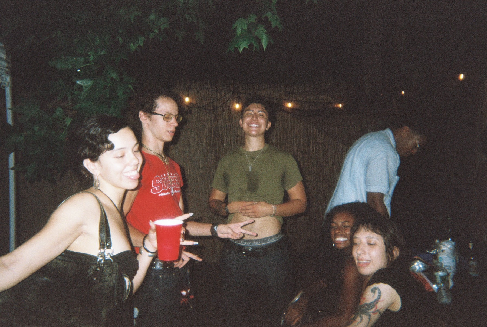
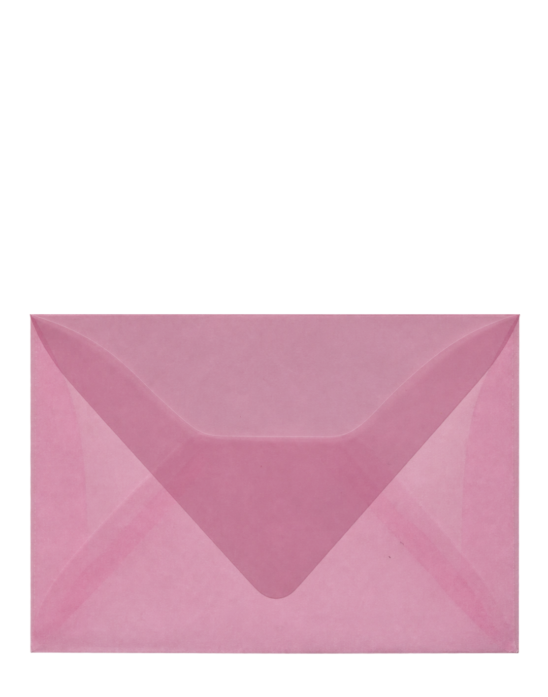
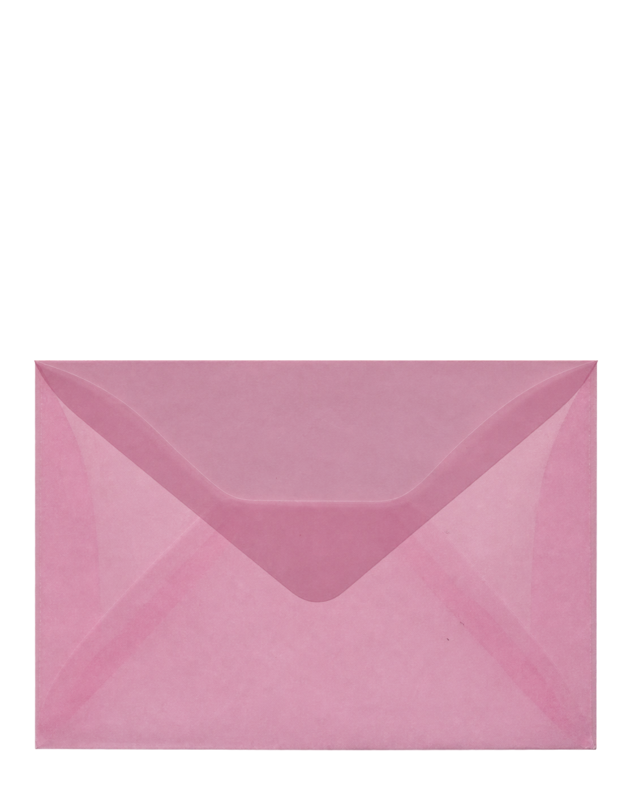
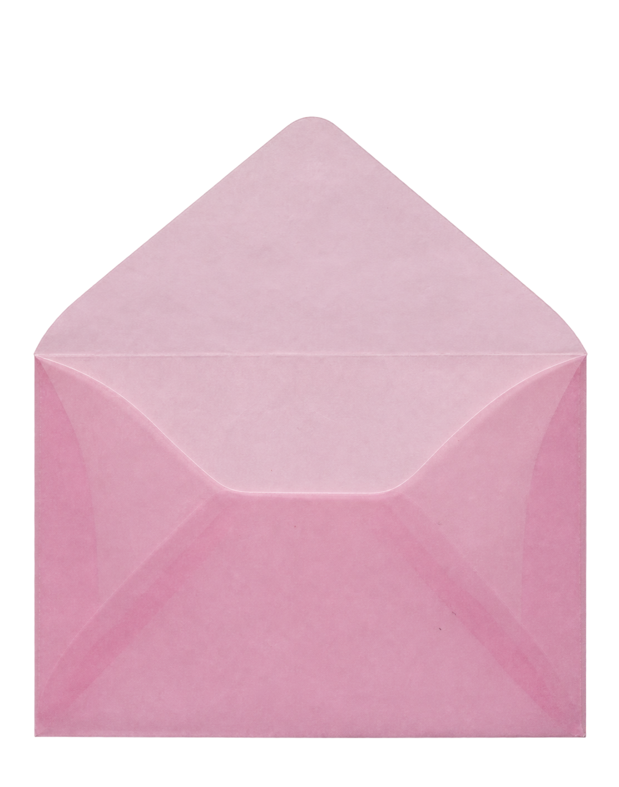
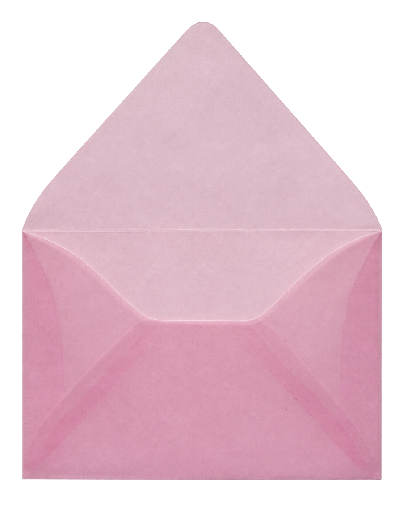
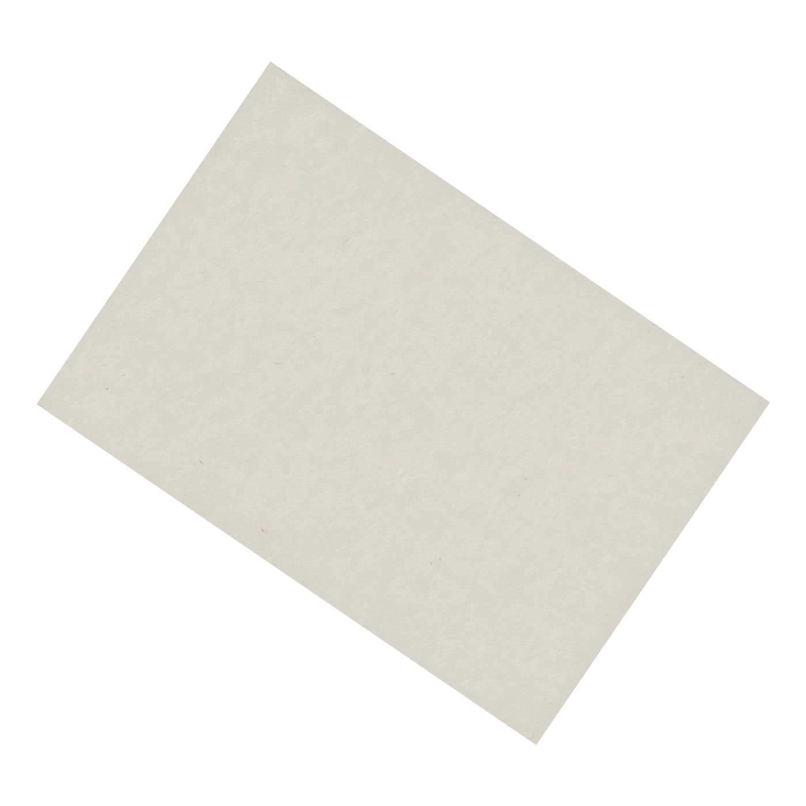

You're Invited
12.12
They say all good things come in threes. Let's put it to the test.
You are hereby cordially invited to Going Analog, Birthday Edition.
Prepare to put your phones away, leave everything on the dance floor, and celebrate not one, not two, but THREE birthdays.
Saturday, December 12
8:30pm to 11:30pm
Index Greenpoint
INSTEAD of gifts this year, we're asking friends to donate $10-20+ towards one of these selected foundations
click to learn more!
Stepping into next year committed to giving back. Impact is sexy.
You can expect...
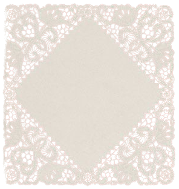
no phones
with beats by Ben Jacobs
beer, wine, and cake
All of our favorite people
A night of celebration, joy, and birthday wishes :)
Dress code:
Show out as your most authentic, maximalist self. No holding back! No dark colors!
meet the birthday girls
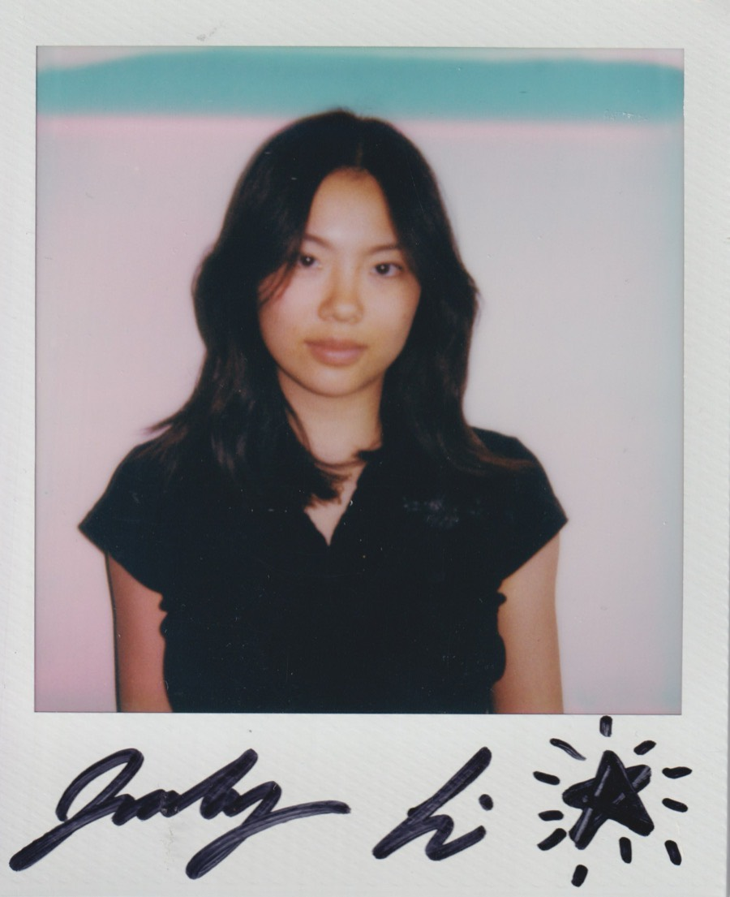
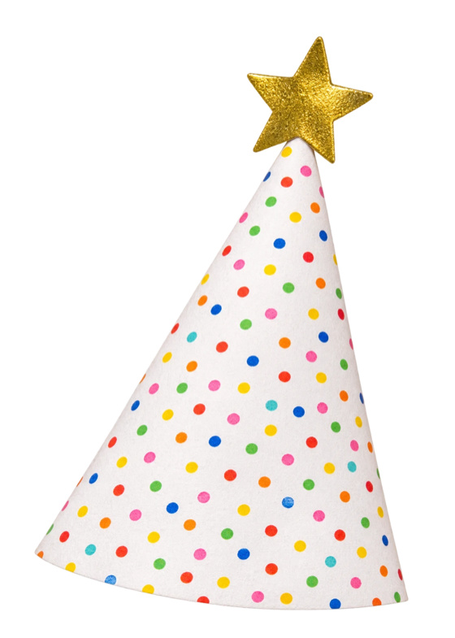
Judy Li, '03
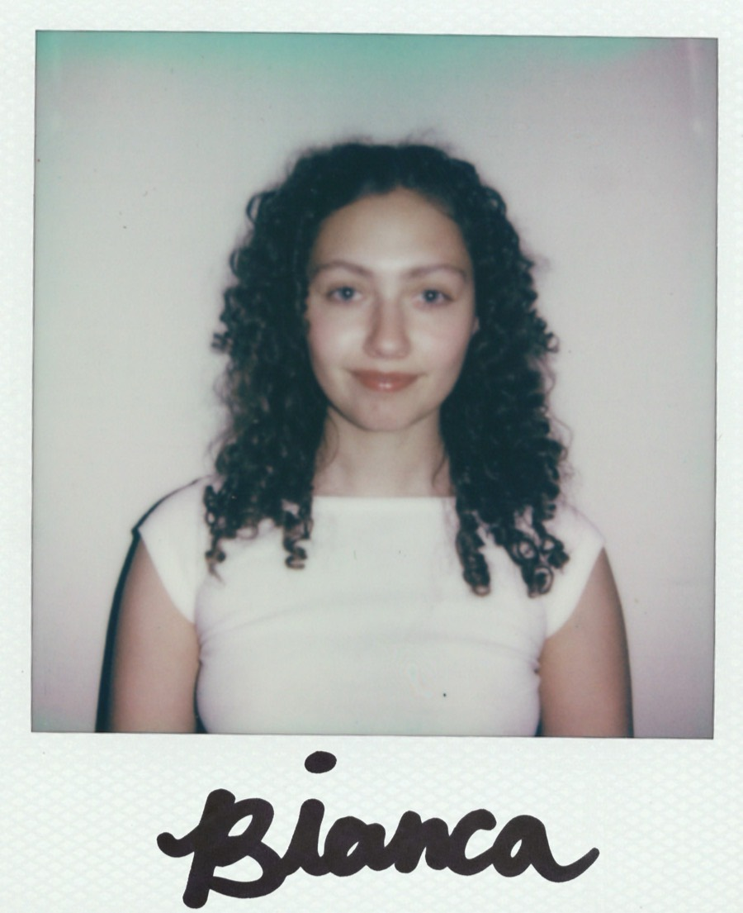
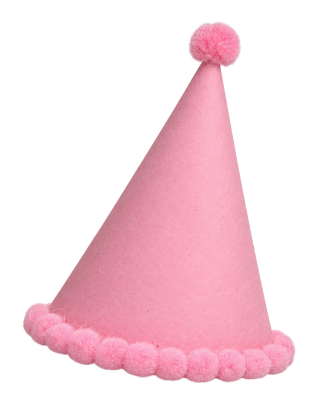
Bianca Pagano, '02
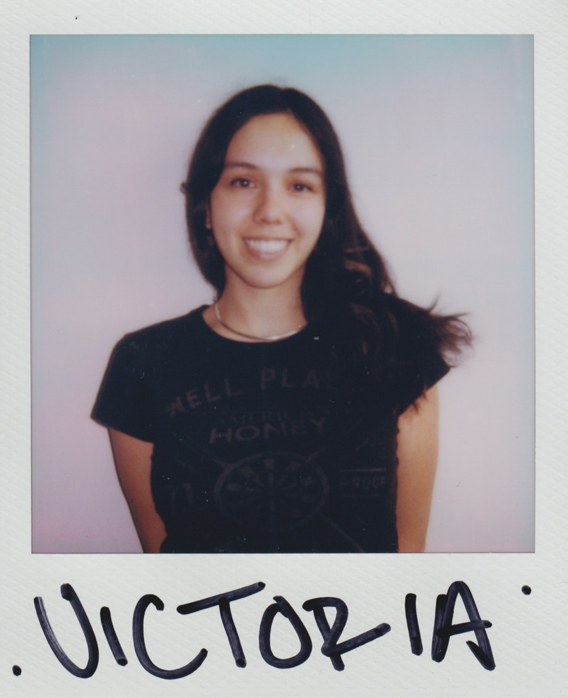
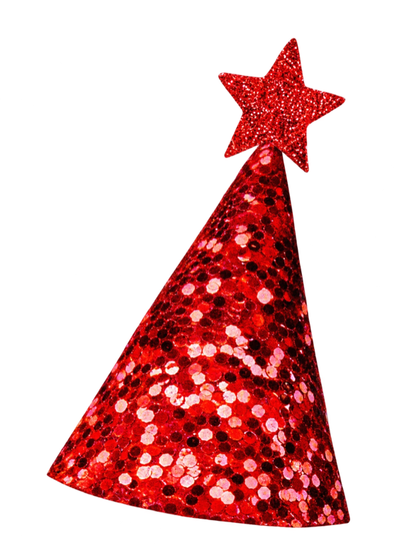
Victoria Briggiler, '02